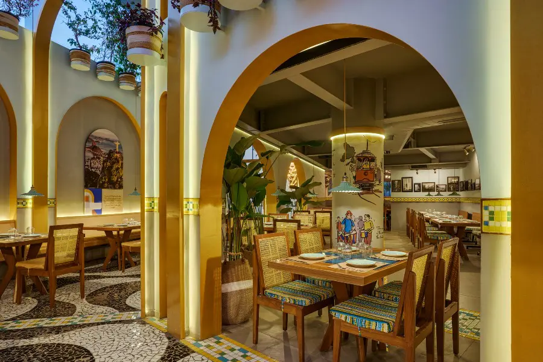

New restaurants and resto-pubs pop up like daisies in Bangalore. And we foodies are left scratching our heads
wondering which new restaurant to head to. After all, let’s face it, we have just 24 hours in a day. Couple that
with navigating Bangalore traffic and we know it would take a little longer to complete our restaurant, resto-pub
wishlist. To make matters easier for you, here are the 5 newest restaurants in Bangalore that you have to check out
this weekend. Let nothing stop you from chilling.
Bhola & Blonde In Indiranagar
Indiranagar is now home to a Bhola & Blonde, a desi resto-bar that features an extravagant rich-blue peacock themed
decor, plush seating and foot-tapping live Bollywood music. Sip desi cocktails that are infused with nostalgic
flavours like falooda and tender coconut water. Gorge on wholesome biryani, succulent kebabs and even crispy kale
chaat. Don’t forget to end your meal on a sweet note with the fusion dessert, Mishti Doi cheesecake.
